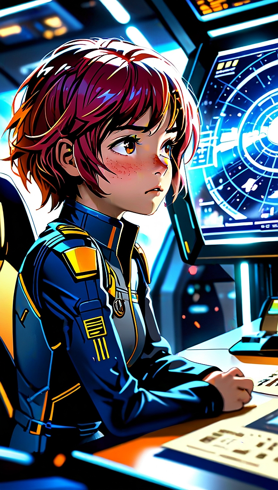
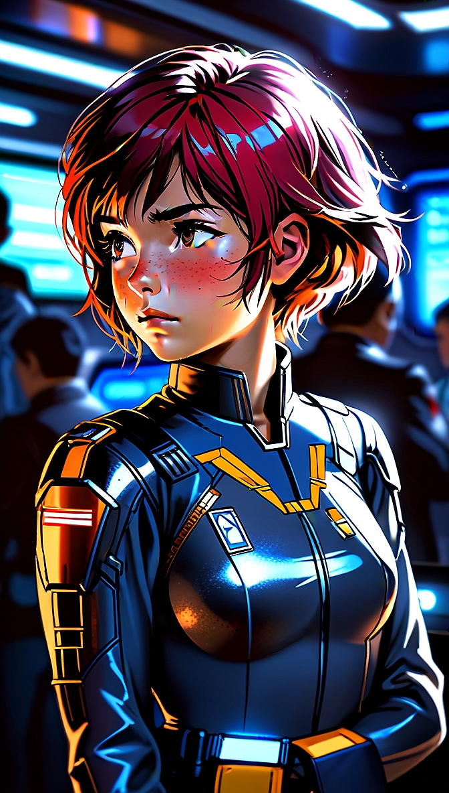
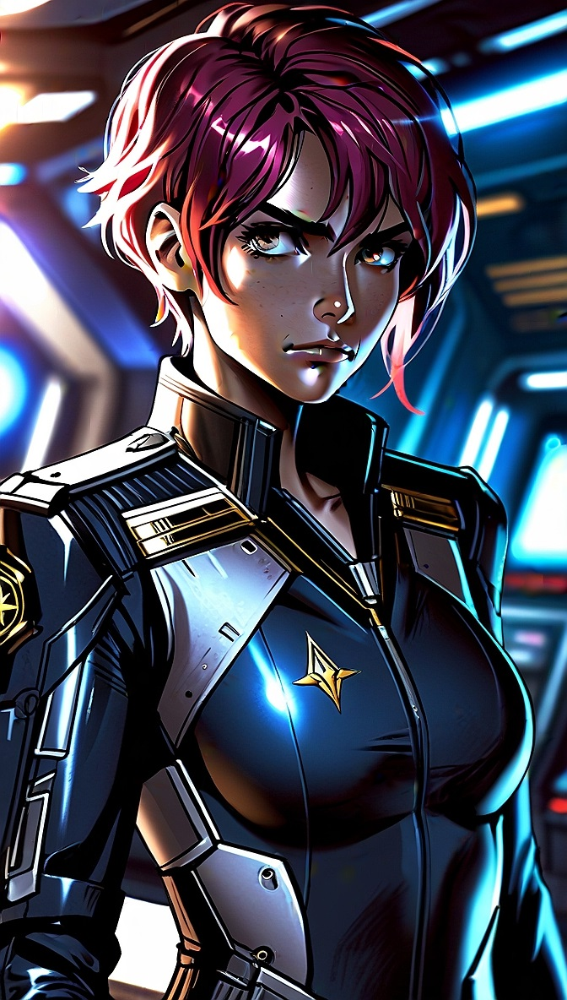
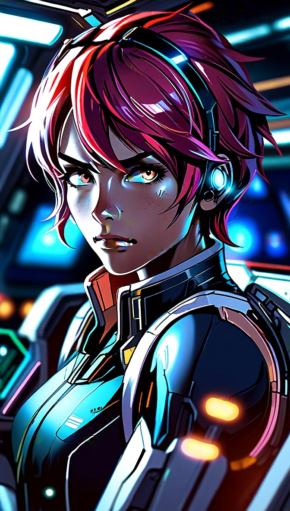

LIYAH MOONEY
Infanzia - ERA I

3286 - Discendenza di una genesi pura
Nata sulla Terra, nel sistema Sol, Liyah Mooney apparteneva a una dinamica e influente dinastia bancaria del XXI secolo. Per generazioni il suo nome aveva rappresentato prestigio e potere economico..
Fin dall'infanzia ricevette un'educazione impeccabile, crescendo con la certezza che avrebbe guidato la società di famiglia.
Dietro quella perfezione, però, Liyah nascondeva un sogno diverso..
Mentre la preparavano alla finanza, osservava le navi partire, immaginandosi ai comandi di un caccia anziché dietro una scrivania. La Terra le sembrava una prigione dorata, e più cresceva più sentiva di appartenere allo spazio.
Adolescenza - ERA II

3294 - Liyah nell'accademia di volo
L'adolescenza di Liyah fu segnata dal fallimento della banca di famiglia, che lasciò solo debiti e disonore. Ferita dall'umiliazione, Liyah cambiò radicalmente: divenne arrogante, provocatoria e diffidente verso il potere.
Rinnegata la famiglia, s'arruolò nell'accademia federale come pilota di caccia leggeri. Tra missioni e scorte affinò doti straordinarie nel combattimento e nelle manovre evasive.
Diventata pilota indipendente in zone instabili, il suo talento attirò gli osservatori di Arissa Lavigny-Duval, che le offrirono un incarico da pilota junior al servizio dell'Impero, avviando la svolta della sua carriera.
Adulto - ERA III

3310 - Liyah pilota Elite PEG

3312 - Liyah e Codename: Tactical Takedown
Quando Arissa Lavigny-Duval affidò Liyah ai Phoenix Elite Group (PEG), la giovane pilota era già una combattente fuori dal comune. La sua precisione ai comandi dei Fighter e delle navi leggere, unita alla capacità di improvvisare nelle situazioni disperate, la resero una risorsa preziosa. Nonostante fosse la più giovane del gruppo, non impiegò molto a conquistarsi il rispetto dei veterani.
Dietro l'educazione impeccabile dell'infanzia conviveva un carattere difficile. Liyah alternava modi raffinati a battute pungenti, mostrando un'arroganza che sembrava sfociare nello scontro. In realtà quella corazza nascondeva la paura di fallire come la propria famiglia. Per questo pretendeva sempre il massimo da sé e da chi combatteva al suo fianco.
Negli anni partecipò alle operazioni più importanti dei PEG. Nell'infiltrazione nella Casa Legacy di Achenar contribuì alla raccolta di informazioni decisive per la caduta di Hengist Duval e l'ascesa di Arissa Lavigny-Duval. Nella guerra civile di Facece collaborò con Dagger nelle operazioni di sabotaggio e intelligence, mentre durante il disastro di Stromgren Orbital garantì l'estrazione della squadra nel pieno del caos che costò la vita alla compagna Flora Flowers.
La sua prova più difficile arrivò con la minaccia Thargoid. Analizzando i dati delle prime offensive comprese prima di molti altri che la guerra aveva ormai superato qualsiasi rivalità politica. Da quel momento combatté in prima linea al fianco di Zeltharian Warden, coordinando gli attacchi dei Fighter contro gli Interceptor e proteggendo la nave del comandante nelle battaglie più critiche.
Quando i Thargoid iniziarono la ritirata verso il Titano Cocijo, Liyah fu tra i primi piloti dei PEG a lanciarsi all'inseguimento insieme alle forze dell'Anti-Xeno Initiative. Ancora oggi ricopre il ruolo di pilota d'élite del gruppo, responsabile della protezione ravvicinata della nave ammiraglia di Zeltharian e delle operazioni con Fighter e navi leggere. Se un tempo combatteva per dimostrare il valore del nome Mooney, oggi combatte per qualcosa che considera molto più importante: la famiglia che ha scelto nello spazio, i Phoenix Elite Group.